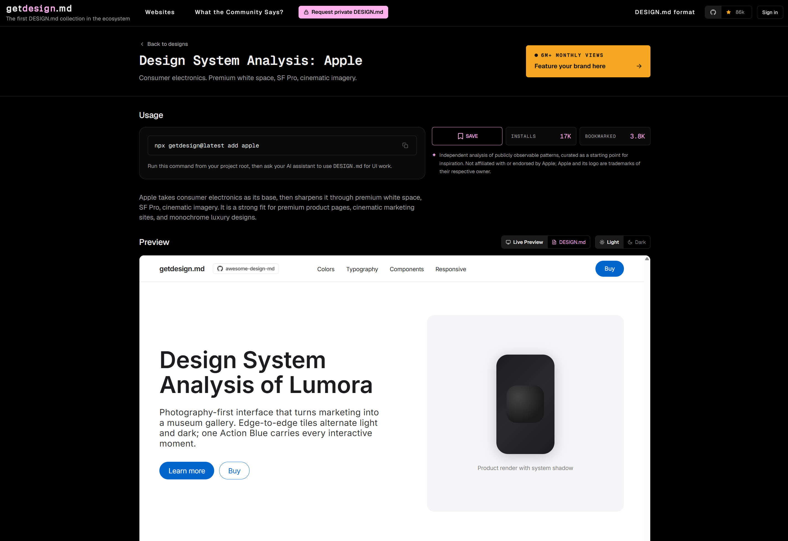
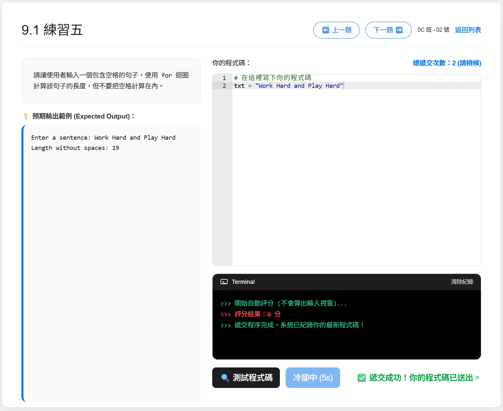

專屬編程平台開發
利用 AI 輔助製作網站分享
圖片 1 建議：網站首頁截圖或教學環境相片
第一部份：從教學現場出發
為什麼我要設計專屬網站
教學初衷與觀察
- 編程課的核心是「動手做」與「即時回饋」。
- 教學需要：
- 實時檢視學生輸入的程式碼。
- 將學生的常見錯誤或創意寫法，即時展示給全班互相學習。
圖片 2 建議：高中 ICT 課堂或學生編程過程
舊方法的限制：Google Colab
- 手續繁複： 從轉檔 (.ipynb)、上載 Classroom 到學生下載並開啟，消耗課堂時間。
- 展示分散： 繳交紀錄分散，難以迅速集中展示特定學生的成果。
- 運行延遲： 依賴平台分配雲端資源，載入及運行速度受限。
- 管理盲區： 電腦室佈局存有死角，難以確認學生專注度。
- 欠缺自動批改： 教師難以同步處理大量學生關於程式正確性的提問。
第二部份：網站功能展示
專為課堂設計的互動平台
1. 登入機制：一次性課堂密碼
- 學生僅需輸入班別、學號及教師提供的 6 位數字課堂密碼。
- 密碼設有時效，限制學生僅能在課堂內登入作答。
- 減少學生在課後嘗試攻擊網站的風險。
- 減少課後利用 AI 工具代答的風險。

圖片 3 建議：網站登入畫面，顯示密碼輸入欄位
2. 學生介面：即時自動批改
- 畫面採用雙分欄設計：左側為題目要求，右側為編程區。
- 學生點擊「測試」後，系統會即時比對結果並提供錯誤提示或過關通知。
- 發揮輔助功能，讓學生初步自行除錯，減輕教師巡堂負擔。

圖片 4 建議：顯示編程區及測試結果的介面
3. 課堂管理：分心計時器
- 系統設有分心偵測功能。
- 當學生切換至其他分頁或視窗時，系統會自動紀錄離開畫面時間並顯示於右上角。
- 以數據輔助課堂秩序管理。

圖片 5 建議：顯示右上角分心時間增加的截圖
4. 教師後台：進度總覽與題庫匯入
- 全班進度概覽： 集中顯示成績及專注度數據，並可檢視特定學生歷次修改程式碼的紀錄。
- 一鍵匯入功能： 支援匯入由 AI 生成的 JSON 格式題庫，簡化題目上架程序。

圖片 6 建議：教師後台數據列表
第三部份：系統架構與技術
網站背後的運作原理
1. 外觀介面 (UI)：站在巨人的肩膀上
- 介面並非從零編寫，而是選用 GitHub 上的開源項目（awesome-design-md 的 Apple 風格）。
- 透過應用現成的高質素樣式庫，可以將工作重心保留在教學內容設計上，外觀交給開源工具包裝。

圖片 7 建議：網站外觀或開源項目的圖片
2. 免費發佈網頁：「讓學生自己的裝置都看到」
- 以前發佈網站需要租用伺服器與網域。現在可將網頁檔案寄存於 GitHub (GitHub Pages)。
- 這是一項免費的雲端空間，上載後會自動生成專屬存取連結。
- 學生可透過不同裝置（電腦、平板）直接開啟網站，零成本且極度方便。

圖片 8 建議：GitHub Pages 標誌或連結示意圖
3. 雲端記憶體：「儲存、新增、編輯或刪除」
- 靜態網頁的最大缺點是重新整理後資料即流失。
- 為解決此問題，本網站整合了 Google 的 Firebase 數據庫。
- 可視作 24 小時運作的「雲端 Excel」。當執行新增題目、編輯答案或刪除資料時，數據庫會在背後紀錄所有變更，讓網站「活起來」。
圖片 9 建議：Firebase 後台數據結構
4. 網站保安：保護你的雲端教室
- 權限驗證： 教師專區採用 Google API 登入，並配合指定電郵白名單設定，限制未經授權的存取。
- 提交冷卻機制： 在學生輸入和提交的位置加入冷卻時間（Cooldown）技術。點擊後按鈕會反灰數秒才能再按，防止連續發送請求導致系統或數據庫資源耗盡。

圖片 10 建議：Google登入畫面或冷卻按鈕
第四部份：AI 輔助開發實戰
提示詞工程 (Prompt Engineering) 與除錯經驗
開發心法：調試、耐性與關鍵指令
- 多次調試 (Iterative Debugging)： 系統開發無法一蹴而就，必須經過反覆測試與修正。
- 時間與耐性： 面對錯誤訊息需保持耐性，引導 AI 逐步排錯。
- 提示詞關鍵字：
- 其他不變：確保 AI 在新增功能時，不會破壞現有已正常運作的程式碼。
- 給我完整的 HTML 代碼：避免 AI 只提供局部片段，減少合併程式碼時發生錯誤的機會。
提示詞範例 1：建構核心架構
設計原意：確立平台的基本邏輯，參考現有技術機制。
LEETCODE 這些平台能夠正確測試用戶所建立的程式是否正確和有正確的輸入和輸出。我想利用這個特點建立一個網站，用來作為在中學編程教學中作為堂課使用。我想在上課時出一些題目，我輸入正確的 PYTHON 程式到網站當中，然後網站能測試所有可能的結果，然後當學生在完成我在課堂上給的堂課問題時，能夠測試運行的程式是否能通過所有測試，然後自動給予分數。我想能夠查看學生所測試和遞交的程式，及收集他們的得分用作評估分數。如有任何必需的資料需要我補充用來完善網站，請發問。提示詞範例 2：功能優化與除錯
設計原意：解決課堂實際應用時出現的系統異常與效能問題。
其他內容不變，為我優化以下功能：
1. 老師專區，查看題目除了可篩選哪些題目外，加入日期的篩選。
2. 老師專區，現時需要老師按下重新整理資料才會顯示最新的學生遞交，轉為即時更新。不需重新整理資料按鈕。
3. 學生在錯誤運行無限 loop 時會出現網頁停頓，學生的錯誤不可避免。把 LOOP 的運行速度增加至0.1秒，若運行得太快網站就會出現停頓。
4. 加入一個取消運行的按鈕，當按下測試程式碼時就會轉為該取消運行按鈕，一但程式運行完畢亦會自動轉回測試程式碼按鈕。
5. 修復執行 `while True: a = input()` 導致網站不停彈出視窗輸入數據的問題。
6. 修復執行字串與整數比較時引發的 `TypeError: '<' not supported between instances of 'str' and 'int'` 錯誤。
直接給我完整的 HTML 代碼。提示詞範例 3：資料驗證與後台擴充
設計原意：完善評分邏輯，並加強學生輸入資料的格式控制。
其他不變，為我優化以下功能：
1. 分數系統出現問題，就算答案正確也只得0分。
2. 老師專區加入一個界面來管理 firebase 內所有的資料表數據。
3. 現有題目和日期篩選功能，但只能篩選特定一天，加入所有日期的功能。
4. 限制學生的班別必為2個字符：1A 1B 1C 1D 1E 至 6A 6B 6C 6D 6E，皆為大寫。其他輸入不接受。
5. 限制學生的學號必為2位字符，如 01, 02 直至最大 45 號。其他輸入不接受。
給我完整的 HTML 代碼。總結
結合明確的教學需求與 AI 輔助
以低成本建構切合課堂環境的教學工具。

圖片 11 建議：整體系統運作圖或分享會結尾相片
附錄：實作參考步驟
供日後建置網站時參考之用
以下幻燈片包含了 GitHub Pages 與 Firebase 的詳細申請及設定流程，請向下捲動查閱。
GITHUB：透過 GitHub Pages 免費上線教學
第 1 步：建立 GitHub 帳號與儲存庫 (Repository)
- 前往 GitHub (github.com) 並註冊一個免費帳號。
- 登入後，點擊右上角的「+」號，選擇「New repository」。
- 在 Repository name 欄位輸入名字（例如：python-class）。
- 確保選擇「Public」（公開，網頁才能被看見）。
- 點擊最下方的綠色按鈕「Create repository」。
第 2 步：上傳程式碼
- 建立完成後，點擊頁面中間Quick setup的「uploading an existing file」。
- 將做好的 index.html 檔案拖曳到畫面中。
- 檔案上傳完畢後，點擊下方的綠色按鈕「Commit changes」。
GITHUB：開啟免費網頁服務
第 3 步：開啟 GitHub Pages
- 在儲存庫頁面，點擊上方的「Settings」（設定）齒輪圖示。
- 在左側選單往下捲動，找到並點擊「Pages」。
- 在 Build and deployment 區塊下的 Branch，將 None 改為 main（或 master），然後點擊旁邊的「Save」。
第 4 步：取得專屬網址
- 儲存後，等待大約 1 到 2 分鐘。
- 重新整理 Pages 設定頁面，最上方會出現一段文字：
大功告成。這個網址就是專屬的課堂網站了。
FIREBASE：申請免費資料庫
- 前往 Firebase Console https://console.firebase.google.com/u/0/ ，使用 Google 帳號登入。
- 點擊「建立新的Firebase專案」，輸入名稱（例如 School-Python-Grader）。
- 進入專案後，在左側選單找到 Firestore Database，點擊「建立資料庫」。
- 選擇「以測試模式啟動 (Start in test mode)」，並選擇最近的地區。
- 回到專案總覽，按下「新增應用程式」，點擊網頁圖示
</>。 - 建立應用程式暱稱，然後註冊
- Firebase 會提供一段包含
apiKey,projectId等資訊的程式碼。請 ChatGPT 協助將代碼整合進 HTML 檔案。
FIREBASE：存取規則代碼參考
測試模式下的資料庫存取規則 (Rules) 類似以下格式，允許網頁直接寫入資料：
{
"rules": {
".read": "now < 1777392000000",
".write": "now < 1777392000000"
}
}